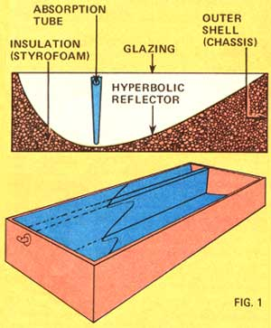
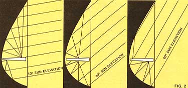
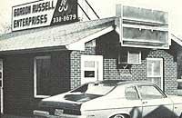
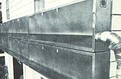

Like many backyard inventors, Dan Lightfoot of Sigourney, Iowa has been interested in alternate energy concepts for some time - about 22 years, as a matter of fact. Unlike most of his peers, however, Dan has managed to make a major breakthrough in his field - one which even has the "experts" shaking their heads in disbelief.
That breakthrough is the Hot-Line solar collector you see pictured in the Image Gallery. At first glance, the Hot-Line module looks just about like a conventional flat-plate collector. What makes Lightfoot's panel highly unconventional is that it [1] contains a specially curved reflector which acts to concentrate incoming sunlight on a wedge-shaped absorption tube, [2] operates with an efficiency far surpassing that of any "normal" flat-plate solar panel, and [3] actually "tracks" the sun through a 50 degree vertical arc - and through 150 degrees in the east/west plane - without moving!
Impossible? That's what a University of Iowa physics professor said when Dan Lightfoot first explained the design to him. Rest assured, though, the device does work, and rather well, at that.
So well, in fact, that Lightfoot (after selling exclusive manufacturing rights on his invention to the Iowa City-based NRG Corporation) has recently been able to quit his job with a mining firm and devote full time to energy research. Lightfoot now heads up an outfit called Aerco, which is short for Alternate Energy Resources Company.
Dan Lightfoot came upon the idea for the Hot-Line collector quite by accident a decade ago. It seems Dan had been observing a sheet of aluminum that was resting up against his garage wall and noticed how the sun's reflection from that curved sheet formed a bright spot on an adjoining wall. Moreover, he noticed that the bright spot stayed in roughly the same place throughout the day, despite the sun's constant movement.
This got Dan to thinking, and to experimenting. With the aid of a small sheet of aluminum, a few scraps of wood and a handful of bolts and clamps, Lightfoot found (by trial and error) that he could curve the metal in such a way that it would focus light in a line - a line that, furthermore, moved only a small distance in or out from the metal as the jury-rigged reflector was tilted through various angles to the sun.
At this point, Dan knew that if he could just bend a long sheet of reflective material to the same curvature, lay a channel along the focal plane of the reflector thus created, and run air or water through that channel, he'd have what no one had developed before: a fixed-position, concentrating solar collector. (Focusing collectors are nothing new, of course, but they all have one drawback: in order to work, the reflector must face squarely into the sun at all times. This usually calls, in turn, for a costly and complex motorized gimbal mounting, to allow tracking of the sun. In contrast, Lightfoot's collector can focus light all day long while remaining stationary - a "major breakthrough" indeed!)
So, in his spare time, Dan built models and refined them over a period of years until he felt he had optimized all aspects of the unorthodox solar panel's design. The end result was the Hot-Line solar collector.
Measuring 26 1/2-by-96-by-10 inches, the production version of the Hot-Line module has a surface area of 16.1 square feet. Nestled in the unit's sturdy aluminum frame or chassis (see Fig. 1 above) is a pre-shaped block of styrofoam which serves to [1] insulate the structure and [2] hold the reflector - a sheet of mirror-finish aluminum - in the proper curvature. Laid along the deepest part of the reflector's curve is the triangular-section aluminum absorption tube. (The wedge shape is necessary in order to accommodate the lengthening and shortening of focal lengths as light enters the panel at different angles.) Finally, covering the surface of the panel is a sheet of Kalwall Sun-Lite fiberglass glazing, which Lightfoot claims "deflects very little incoming sunlight, even at oblique angles."
How does the Hot-Line collector work? As you can see in Fig. 2 (see Image Gallery), when sunlight enters the panel at a nearly perpendicular angle (such as would occur around sunrise) the reflector focuses incoming rays of light either on the outermost edge of the absorption tube or the part closest to the reflector itself, depending on whether the incident light enters the collector's upper portion or lower portion. As Ole Sol rises higher in the sky, the focal line, or "hot line," hitting the top surface of the absorption wedge moves closer to the reflector - while the hot line on the aluminum extrusion's underside moves away from the reflector sheeting. Not until the sun is more than 60 degrees above the horizon, or better than 75 degrees displaced to the east or west, does the incoming light fail to focus or become "blanked out" by the chassis itself.
What this means in the case of a vertically mounted, south-facing unit is: the Hot-Line collector [A] starts working as soon as the morning sun peeks over the horizon, [B] continues to concentrate light energy all day until the sun rises more than 60 degrees (that is, a good deal more than its maximum winter height) above the horizon, and [C] does so at continuously high efficiency. (At the moment, Dan Lightfoot is not advertising any particular set of numbers when it comes to the efficiency of his collector, but preliminary tests by others in the field point to heat-recovery percentages in the very high 80s or low 90s - which is about double the efficiency of most commercial flat-plate collectors.)
Thus, it's easy to believe Dan Lightfoot when he confidently states that just one of his 16-square-foot Hot-Line panels is sufficient to provide total daytime heating for one room in an average house. "Some rooms heat up more than others," Lightfoot explains, "depending on the degree of insulation, volume of air to be heated, and so on. However, you might like to know that one fellow in Kaloma, Iowa heats a room with a single Hot-Line module, and that room doesn't have any insulation or even any wallboard! Still, the 140-degree air coming out of that collector warms the place right up."
So far, Aerco and NRG have installed a total of 18 Hot-line units in Iowa, all of them air-heating (as opposed to water-heating) models. That is, in each of these installations a blower is used to force room air through the collector's absorption tube and straight back again into the room, without "tapping into" a heat storage reservoir at any point. (A water system employing heat storage is, however, under development at present and will be on the market soon.)
How does Dan Lightfoot like spending all of his time (and most of his cash reserves) on energy research, after giving decades of his adult life to a career in the coal-mining industry? "I'm happier doing what I'm doing now - trying to wake people up to the possibilities of alternative energy sources - than I've ever been," he proclaims. "I wouldn't trade the satisfaction I'm receiving now for anything in the world!"
|
 MOTHER EARTH NEWS STAFF Fig.1 Diagram of solar reflector construction. |
 MOTHER EARTH NEWS STAFF Fig. 2 Diagram of the change in reflection direction as related to the sun elevation in degrees. |
 MOTHER EARTH NEWS STAFF Hot-Line modules furnish most of the heat used by this Iowa firm. |
|
 MOTHER EARTH NEWS STAFF Close-up of modules mounted vertically on south wall of a house. |
|
|